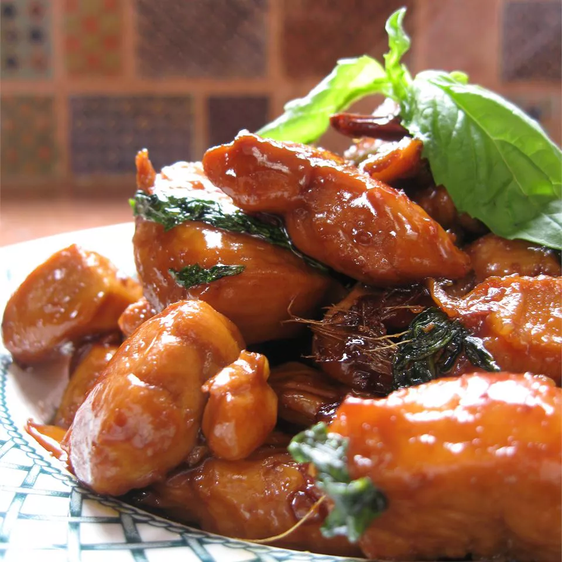

Taiwanese-Style Three Cup Chicken

Description
This chicken dish is one of the beer-lover's favorites in Taiwan.
It requires three essential ingredients — soy sauce, rice wine, and sesame oil.
An abundant amount of Thai basil and ginger make this chicken dish a heavenly spicy meal.
Serve with noodles or rice.
Ingredients
- 1 tablespoon vegetable oil
- 1 ½ pounds skinless, boneless chicken thighs, cut into chunks
- 1 tablespoon sesame oil
- 10 slices fresh ginger
- 2 cloves garlic, sliced
- ½ cup dry sherry
- ⅓ cup soy sauce
- ¼ cup water
- 3 tablespoons white sugar
- ½ cup fresh Thai basil leaves
- 3 dried whole red chilies
Steps
-
Heat vegetable oil in a large skillet over medium-high heat. Add chicken and cook until
lightly browned on all sides, about 5 minutes. Remove chicken
from the skillet and set aside.
-
Heat sesame oil in the same skillet. Add ginger and garlic; cook and stir until ginger
begins to brown, about 30 seconds. Stir in reserved chicken, sherry, soy sauce, water,
and sugar. Bring to a boil, then reduce heat to medium-low and simmer until there is only
1/4 cup of liquid left in the skillet, about 20 minutes. Stir in basil and chiles;
increase heat to medium and continue cooking until liquid is almost gone.